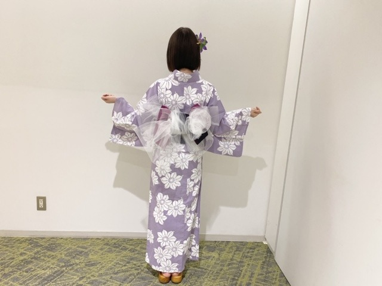

2020/0831Monはちがつまつ
こんばんは
エー！夏もうおわるってほんとですか
明日から9月ですか
夏らしいことはできてませんが切り替えて
秋冬を楽しみたいと思います
そんなこんなで
もう秋冬服をチェックしはじめています☺︎
今年はブラウンやアイボリー系多めの
ちょっと古着も混ぜたヨーロッパの秋冬ファッションをイメージしたいなぁと思っています
とりあえずおっきいメガネを探してます

トレーナーもかわいいし
ニットもかわいいし
最近はスカートよりデニムなどパンツ系が好き

今年はお仕事で3〜4回
浴衣を着ました
それが夏の思い出かなぁぁ
男の人にも甚平か浴衣どちらでもいいので
着てほしい派ですね
日本男児って感じが素敵です
プライベートでも全然着てほしいです
みなさん！もう夏は終わりますが！笑
何卒よろしくお願いします！
ちなみに
たまのごほうび の玉緒くんは
私服で花火大会に来るのだけど
そこもまた不器用ポイントでかわいいでございます
でもやっぱり浴衣みたい...よ...

宵宵^ - ^
そういえば新しい漫画を電子書籍で購入
しました^ - ^
ほしとくず っていう少女漫画！
また感想書きますね

TGCまで食事気をつけなきゃー
では☺︎
2020/08/31 17:24
コメント(253)
ブログ更新ありがとう (^o^)
ブログ更新ありがとう！
なんか何もしてないのに今年の夏は早かった…
でも未央奈さんの浴衣姿をたくさん見て夏を感じる事ができたよ！
俺はもうすぐ完結する「あさひなぐ」が途中で止まってたから、最終巻が出たらまた買い始めるつもり！
未央奈さんの一堂寧々をまた観たいなぁ…なんて！
TGCの日、なるべく観れるよう頑張る！
なんか何もしてないのに今年の夏は早かった…
でも未央奈さんの浴衣姿をたくさん見て夏を感じる事ができたよ！
俺はもうすぐ完結する「あさひなぐ」が途中で止まってたから、最終巻が出たらまた買い始めるつもり！
未央奈さんの一堂寧々をまた観たいなぁ…なんて！
TGCの日、なるべく観れるよう頑張る！
浴衣、凄くお似合いです
色もいいね〜
色もいいね〜
未央奈ちゃん♪ブログの更新ありがとうね！凄く嬉しいよ！
もう夏も終わりだね。早いね(^_^;)明日から９月って本当に早いね！自分も秋冬楽しみます(笑)
未央奈ちゃんの秋冬のお洋服どんな感じか凄く見てみたいよ♪ヨーロッパの秋冬ファッション凄く見てみたいよ♪浴衣姿の未央奈ちゃん凄く可愛いかったよ！凄く似合ってて自分は夏の思い出の１つは未央奈ちゃんの浴衣姿が見れた事が思い出かな(*^^*)
いつか自分も浴衣とか着て大好きな未央奈ちゃんと一緒に盆踊りとか行きたいって思ったよ！
こちらこそ夏は終わりますけど、何卒よろしくお願いいたします♪
ほしとくずの感想楽しみに待ってるね！また、ブログの更新楽しみにしてるね！未央奈ちゃん大好きだよ♪では！
堀 未央奈神推し秀喜より！(≧∇≦)
もう夏も終わりだね。早いね(^_^;)明日から９月って本当に早いね！自分も秋冬楽しみます(笑)
未央奈ちゃんの秋冬のお洋服どんな感じか凄く見てみたいよ♪ヨーロッパの秋冬ファッション凄く見てみたいよ♪浴衣姿の未央奈ちゃん凄く可愛いかったよ！凄く似合ってて自分は夏の思い出の１つは未央奈ちゃんの浴衣姿が見れた事が思い出かな(*^^*)
いつか自分も浴衣とか着て大好きな未央奈ちゃんと一緒に盆踊りとか行きたいって思ったよ！
こちらこそ夏は終わりますけど、何卒よろしくお願いいたします♪
ほしとくずの感想楽しみに待ってるね！また、ブログの更新楽しみにしてるね！未央奈ちゃん大好きだよ♪では！
堀 未央奈神推し秀喜より！(≧∇≦)
未央奈ちゃんブログ更新ありがとう！
さくらちゃんとあやめちゃんとでんちゃんと同じ愛知県出身の愛知の覇王です！
蓮加ちゃんと同じ高校2年生です！
今年の夏、終わるのがめっちゃ早かったですね！
今年はたくさん乃木坂メンバーの浴衣姿が見れてめっちゃ嬉しかったです！
もちろん未央奈ちゃんの浴衣姿もたくさん見れてめっちゃ嬉しかったです！
TGC楽しみにしています！
これからもずっと応援するので、頑張ってください！
体調を崩さないように気をつけてください！
さくらちゃんとあやめちゃんとでんちゃんと同じ愛知県出身の愛知の覇王です！
蓮加ちゃんと同じ高校2年生です！
今年の夏、終わるのがめっちゃ早かったですね！
今年はたくさん乃木坂メンバーの浴衣姿が見れてめっちゃ嬉しかったです！
もちろん未央奈ちゃんの浴衣姿もたくさん見れてめっちゃ嬉しかったです！
TGC楽しみにしています！
これからもずっと応援するので、頑張ってください！
体調を崩さないように気をつけてください！
未央様今日もお綺麗です！
夏が終わるって言っても九月ってまだまだ暑いですよね。関東とかは。まだまだ熱中症予防は怠れないです
ちなみに今近くの中学校から吹奏楽部の練習の音が聞こえます。それを聴きながら部活やったり、教室で居残りおしゃべりが懐かしいと思う今日この頃です。
未央奈への質問。
もし、いま中学生、高校生に戻れるならなにしたい？
あとこれを見たり聞いたりすると学生時代に戻りたくなることある？
いま、事故物件 怖い間取り 公開してるけど見に行く予定ある？
以上です。
本日も愛おしいお姿を拝見できて嬉しかったです。
CM何回か見ました！良かったです！まぁ、未央奈が見れるのならなんでもいいって思いもありますが
では次回も楽しみにしてます！
夏が終わるって言っても九月ってまだまだ暑いですよね。関東とかは。まだまだ熱中症予防は怠れないです
ちなみに今近くの中学校から吹奏楽部の練習の音が聞こえます。それを聴きながら部活やったり、教室で居残りおしゃべりが懐かしいと思う今日この頃です。
未央奈への質問。
もし、いま中学生、高校生に戻れるならなにしたい？
あとこれを見たり聞いたりすると学生時代に戻りたくなることある？
いま、事故物件 怖い間取り 公開してるけど見に行く予定ある？
以上です。
本日も愛おしいお姿を拝見できて嬉しかったです。
CM何回か見ました！良かったです！まぁ、未央奈が見れるのならなんでもいいって思いもありますが
では次回も楽しみにしてます！
お疲れ様です!
こんばんは。
明日から9月なんですよね。
昨年は神宮ライブが8月と9月をまたぎ、最高の夏の思い出でした。
ですね、気持ち切り替え来る秋を楽しみたいですよね。
秋冬服楽しみにしてますよ。
可愛い着こなし、未央奈さんの持ち前の感性が楽しみです。
ヨーロッパを意識した秋冬服期待してますよ。
可愛い写真をありがとうございます。
連日癒しのコレクションが増えて幸せですよ。
可愛いですね、愛おしいです。
癒しのコレクションで癒される瞬間が格別なのです。
トレーナーやニット姿が見たいです。
早く秋が来て欲しいですよね。
浴衣姿が可愛いですよ。
24時間テレビを思い出します。
夏の思い出です。盆踊り可愛いかったです、しみじみ。
甚平は一時期着ていたのですが、古くなって新しいの探しましたが、気に入った物が見つからずそれ以降は着てないです。
気心地も良く楽でしたが。
また探してみようかな。
少女漫画で癒されて欲しいです。
新たな出会いを楽しんでくださいね。
TGC楽しみですね。
目指して頑張ってくださいよ。
今日はそれほど暑くなく、ややしのぎ易い日でしたね。
明日はより暑さはやわらぎそうです。
お身体ににはお気をつけてくださいね。
未央奈さんの幸せは自分の幸せですから。
可愛い未央奈さん大好きですよ！
頑張って行きましょう！
明日から9月なんですよね。
昨年は神宮ライブが8月と9月をまたぎ、最高の夏の思い出でした。
ですね、気持ち切り替え来る秋を楽しみたいですよね。
秋冬服楽しみにしてますよ。
可愛い着こなし、未央奈さんの持ち前の感性が楽しみです。
ヨーロッパを意識した秋冬服期待してますよ。
可愛い写真をありがとうございます。
連日癒しのコレクションが増えて幸せですよ。
可愛いですね、愛おしいです。
癒しのコレクションで癒される瞬間が格別なのです。
トレーナーやニット姿が見たいです。
早く秋が来て欲しいですよね。
浴衣姿が可愛いですよ。
24時間テレビを思い出します。
夏の思い出です。盆踊り可愛いかったです、しみじみ。
甚平は一時期着ていたのですが、古くなって新しいの探しましたが、気に入った物が見つからずそれ以降は着てないです。
気心地も良く楽でしたが。
また探してみようかな。
少女漫画で癒されて欲しいです。
新たな出会いを楽しんでくださいね。
TGC楽しみですね。
目指して頑張ってくださいよ。
今日はそれほど暑くなく、ややしのぎ易い日でしたね。
明日はより暑さはやわらぎそうです。
お身体ににはお気をつけてくださいね。
未央奈さんの幸せは自分の幸せですから。
可愛い未央奈さん大好きですよ！
頑張って行きましょう！
いつも投稿ありがとう！！！
私は漫画に疎いから未央奈ちゃんが読んでるの読もうかな笑
食事には私も気をつけよう〜！
お体に気をつけて無理せず頑張ってくださいねはーと
私は漫画に疎いから未央奈ちゃんが読んでるの読もうかな笑
食事には私も気をつけよう〜！
お体に気をつけて無理せず頑張ってくださいねはーと
堀ちゃんブログ更新ありがとうございます。
堀ちゃん今日も可愛いです。
堀ちゃんの浴衣めっちゃ可愛いです。
堀ちゃんの浴衣の生写真凄く欲しいです。
毎月乃木坂の生写真を買うのが楽しみです。
生写真を買うのを楽しみにお仕事頑張っています
これからもお仕事頑張って下さい。
自分もお仕事頑張ります。
これからのブログを楽しみにしてます。
堀ちゃん今日も可愛いです。
堀ちゃんの浴衣めっちゃ可愛いです。
堀ちゃんの浴衣の生写真凄く欲しいです。
毎月乃木坂の生写真を買うのが楽しみです。
生写真を買うのを楽しみにお仕事頑張っています
これからもお仕事頑張って下さい。
自分もお仕事頑張ります。
これからのブログを楽しみにしてます。
みおちゃんブログ更新ありがとう！！
わたしもこの夏何も出来なかったよ(>_<)寂しいからひまわり畑にでも行ってみようかな〜って思ってるよ〜〜
わたしもこの夏何も出来なかったよ(>_<)寂しいからひまわり畑にでも行ってみようかな〜って思ってるよ〜〜
がつまつ て ひらがな書きすると
なんかガタゴト感? が出ますね☺︎
デニムにスニーカーのラフスタイルを是非見せてください。ひそかに待ってます
眼鏡！日曜日久しぶりに繁華街へ出かけ 新しい眼鏡を下見してきました いいの見つけました 秋冬物(ハイカット)スニーカーももう買ってあるので 秋が楽しみ
MV集2 も予約済み楽しみ
なんかガタゴト感? が出ますね☺︎
デニムにスニーカーのラフスタイルを是非見せてください。ひそかに待ってます
眼鏡！日曜日久しぶりに繁華街へ出かけ 新しい眼鏡を下見してきました いいの見つけました 秋冬物(ハイカット)スニーカーももう買ってあるので 秋が楽しみ
MV集2 も予約済み楽しみ
時が経つにつれて綺麗になってくのはなぜですか…。
もちろん努力してるからなんだけど笑
同じ24歳とは思えんです。可愛い。
もちろん努力してるからなんだけど笑
同じ24歳とは思えんです。可愛い。
こんにちは、ブログ更新ありがとうございます。いきなりなのですけど、本当にブログ全部読んでますか？(多い時もです。) できれば教えてください。
未央奈お疲れ様！！
ブログ更新ありがとう。
浴衣着る機会…あとは秋祭りとかかな？
TGC頑張ってね！！
最近自分はビジネス本買って読んでます
読書の秋が着弱近づいてるね
ブログ更新ありがとう。
浴衣着る機会…あとは秋祭りとかかな？
TGC頑張ってね！！
最近自分はビジネス本買って読んでます
読書の秋が着弱近づいてるね
今年の夏あっという間だね…でも切りかえて秋冬楽しみましょー！未央奈ちゃんなんでも似合うからニットとか可愛そう ほしとくずの感想待ってるねー！私も知らなかったから読んでみたい！！！
それでは〜！！
それでは〜！！
ブログ更新ありがとうございます✨
今年の夏は受験ということもあって夏らしいことできませんでした、、
今年浴衣着たかったなぁ、、、。
堀ちゃんはほんと何を着ても素敵です！浴衣も似合う
TGCまでファイトです！応援してます✨✨✨
今年の夏は受験ということもあって夏らしいことできませんでした、、
今年浴衣着たかったなぁ、、、。
堀ちゃんはほんと何を着ても素敵です！浴衣も似合う
TGCまでファイトです！応援してます✨✨✨
ゆかたカワイイ。似合う。
質問です。部活終わりの運動部に一言かけるとしたら？
いつも可愛い堀さんを応援しています。
質問です。部活終わりの運動部に一言かけるとしたら？
いつも可愛い堀さんを応援しています。
もう8月も終わりなんですね。
北海道へ旅行に行ってきました！
こんな時期だけど思い切りました！（笑）
未央奈チャンは何処かに行ったりしましたか？
北海道へ旅行に行ってきました！
こんな時期だけど思い切りました！（笑）
未央奈チャンは何処かに行ったりしましたか？
ブログ更新ありがとう！
浴衣姿も可愛いですね！
明日から9月か〜 時が過ぎるのは早いですね。
夏は終わるけど、まだまだ暑いのでお互いに気をつけて秋冬も頑張っていきましょー！
では
浴衣姿も可愛いですね！
明日から9月か〜 時が過ぎるのは早いですね。
夏は終わるけど、まだまだ暑いのでお互いに気をつけて秋冬も頑張っていきましょー！
では
本当です
今日で８月終わります
こんばんは
夏らしいこと何もしなかったなぁ
あと４ヶ月で今年も終わるって
人生が倍速で進んでます、、ちゃんとしなきゃ
秋冬物
今年はダウンジャケットを買い替えようと思ってます。トレーナーもいいな
堀ちゃんはダウン着るのかな？
ハーフコート？ロングコート？
ではでは
和服似合いますね〜素敵です。
夏らしいこと何もできなかったからこの前甚平引っ張り出して家で着てました笑
縁側でスイカの種とか飛ばしてみたいな〜
夏らしいこと何もできなかったからこの前甚平引っ張り出して家で着てました笑
縁側でスイカの種とか飛ばしてみたいな〜
エアコンの風が涼しげに為りました‼️秋ですね 食欲の・・・・♪ヽ(´▽｀)/
堀ちゃんの浴衣姿素敵！
８月も今日で最後ですね。
夏らしいことはなんもしなかったなぁー！
８月も今日で最後ですね。
夏らしいことはなんもしなかったなぁー！
今日もお疲れ様！
ブログ更新ありがとう。
いよいよ明日から秋ですね。
自分も秋が好きなので秋を楽しみたいです。
TGC楽しみにしてます。
たまにはしっかり食べて体調管理気をつけてくださいね。
お仕事頑張ってください！
ブログ更新ありがとう。
いよいよ明日から秋ですね。
自分も秋が好きなので秋を楽しみたいです。
TGC楽しみにしてます。
たまにはしっかり食べて体調管理気をつけてくださいね。
お仕事頑張ってください！
ブログ更新ありがとうございます。
8月終わるの早いですね。今年の夏はなにもできずに終わりそうです。早く秋になって涼しくなって欲しいです。
浴衣お似合いです。可愛いです。
写真ありがとうございます。
8月終わるの早いですね。今年の夏はなにもできずに終わりそうです。早く秋になって涼しくなって欲しいです。
浴衣お似合いです。可愛いです。
写真ありがとうございます。
浴衣姿可愛い！
浴衣、甚平は出掛けるときいつも着てるよ
未央奈ちゃんの浴衣姿最高です
未央奈ちゃんの浴衣姿最高です
かわいい！
ブログ更新ありがとう
もう9月、早いですね
僕の好きな色の浴衣の写真もありがとう
もちろん似合ってるよ
もう9月、早いですね
僕の好きな色の浴衣の写真もありがとう
もちろん似合ってるよ
未央奈さんブログ更新してくれてありがとうございます。☀️ 夏はまだ続くから熱中症とコロナ気を付けて頑張って下さい。浴衣姿可愛い❤️です。流石ファッションセンスが のと最高の彼女です。
こんばんは。 今日自分は、地元の川で釣りをしました。
あんまりきれいな川でもないので、基本待ったく釣れま
せんでした。 コロナ禍の中で、唯一できそうなレクリ
エーションだったので、釣り糸垂れただけでも良かった
です。
最後に、MEGAシャークのようなグロテスクな大鯉に、
ゆうゆうと、水面から背びれが出る近さで、遭遇しまし
た。 気色良くなかったです。
川風が、強風で涼しくて良かったです。
そのせいか、家に入って来る風が、寒いぐらい涼しい
です。 暦上は秋なのでしょうか？
以上です。 失礼しました。
こんばんはお疲れさま☺
そうやで～✨
明日から９月やで～✨(笑)☺
うちら仕事では期が変わるときです。
バタバタ疲れたよ～✨(笑)
今年はこんな時やから春も夏もある意味仕方ないよ。
我慢も大切、大事です✨
堀ちゃん浴衣も似合ってますね。
田舎にいた頃夏祭り甚平着たよ✨
良かったら散歩します？
なんてね(笑)ハハハハハハ☺
ではではまたね。
体調気をつけてくださいね。
秋冬コーデ期待してます。
TGCも無理なく、楽しんでくださいね。
ほなね、堀ちゃん☺
そうやで～✨
明日から９月やで～✨(笑)☺
うちら仕事では期が変わるときです。
バタバタ疲れたよ～✨(笑)
今年はこんな時やから春も夏もある意味仕方ないよ。
我慢も大切、大事です✨
堀ちゃん浴衣も似合ってますね。
田舎にいた頃夏祭り甚平着たよ✨
良かったら散歩します？
なんてね(笑)ハハハハハハ☺
ではではまたね。
体調気をつけてくださいね。
秋冬コーデ期待してます。
TGCも無理なく、楽しんでくださいね。
ほなね、堀ちゃん☺
浴衣似合う！夏！って感じ〜
未央奈ブログ更新ありがとう
浴衣や甚兵衛好きなのかぁなら来年あたりには着よう！！
もう夏も終わりなのかぁ秋物の服チェックしなきゃ
浴衣や甚兵衛好きなのかぁなら来年あたりには着よう！！
もう夏も終わりなのかぁ秋物の服チェックしなきゃ
こんばんわわわ~ʕ•ᴥ•ʔ
今日は寒かったです…。
空を見たら雲が「秋」になっていました。
辞書で、「うろこ雲」と引いてみたら、うろこ雲は別名があって、「いわし雲」と「さば雲」と言うそうです(*^^*)
へぇ~!ってなりました。
私の今日の豆知識です。
どこかで役に立つかなぁ⁇
そろそろ長袖の季節ですね~‼︎
早くパーカー着たい♬
お気に入りのえんじ色をしたAラインパーカーがあるので、それにデニムのパンツとか、花柄のスカートを合わせて着たいな。
楽しみ~♡
最近アイスコーヒーを好きになったけど、そろそろホットコーヒーじゃないと寒くなりそうだな。。
学校の教室から外の紅葉が見えるのが嬉しい。。
とんぼもよく見かけるようになって、今年は少し遅めの秋だなって感じます(*'▽'*)
前回のブログのコメント、途中まで書いたのに間違えて消してしまったので、質問だけ。。
⇩
⭐︎ 秋といえば？？
もし良ければ、気が向いたら、答えてくださると嬉しいです‼︎
明日は定期テスト…。
今は休憩中…。
頑張らなきゃなぁ。
今回はいい点取れるかなぁ。
頑張ります、ね。
いつも長くなってしまいすみません。
忙しいのにファン想いで、定期的にブログを更新してくださるみおにゃたんが本当に大好きです‼︎
これからも頑張ってください‼︎
Route246、踊れるようになったので、音楽を聴いているとついつい身体が踊り出すんです。
いつか、メンバーの皆様と一緒に。。。
なんて、ね。
ずっと応援しています!
大好き♡
今日は寒かったです…。
空を見たら雲が「秋」になっていました。
辞書で、「うろこ雲」と引いてみたら、うろこ雲は別名があって、「いわし雲」と「さば雲」と言うそうです(*^^*)
へぇ~!ってなりました。
私の今日の豆知識です。
どこかで役に立つかなぁ⁇
そろそろ長袖の季節ですね~‼︎
早くパーカー着たい♬
お気に入りのえんじ色をしたAラインパーカーがあるので、それにデニムのパンツとか、花柄のスカートを合わせて着たいな。
楽しみ~♡
最近アイスコーヒーを好きになったけど、そろそろホットコーヒーじゃないと寒くなりそうだな。。
学校の教室から外の紅葉が見えるのが嬉しい。。
とんぼもよく見かけるようになって、今年は少し遅めの秋だなって感じます(*'▽'*)
前回のブログのコメント、途中まで書いたのに間違えて消してしまったので、質問だけ。。
⇩
⭐︎ 秋といえば？？
もし良ければ、気が向いたら、答えてくださると嬉しいです‼︎
明日は定期テスト…。
今は休憩中…。
頑張らなきゃなぁ。
今回はいい点取れるかなぁ。
頑張ります、ね。
いつも長くなってしまいすみません。
忙しいのにファン想いで、定期的にブログを更新してくださるみおにゃたんが本当に大好きです‼︎
これからも頑張ってください‼︎
Route246、踊れるようになったので、音楽を聴いているとついつい身体が踊り出すんです。
いつか、メンバーの皆様と一緒に。。。
なんて、ね。
ずっと応援しています!
大好き♡
更新待ってました〜！
未央奈ちゃん今日も可愛い( ¨̮ )
TGCもついに今週だね！
次の更新も待ってるね〜
未央奈ちゃん今日も可愛い( ¨̮ )
TGCもついに今週だね！
次の更新も待ってるね〜
ブログ更新ありがとう！
堀ちゃん！
まだ暑いから、体に気を付けてね！
堀ちゃん！
まだ暑いから、体に気を付けてね！
未央奈さん、ブログ更新ありがとう。どこにでもいるおっさんです。
バレッタのMVが好きです。もうすぐ第２段出るから、第1段を見返してた。
意気地無し
名台詞だね。なんのMVか覚えてる？
堀北、らんらん、ひめ、そして、花奈りん。
最強のユニット。
第２段では、やっぱり、路面電車かな。
未央奈さんの歌声に、泣かされるもんな。
９月に入っても、まだ、暑いよ。熱中症には気をつけて。
では
ひでき
バレッタのMVが好きです。もうすぐ第２段出るから、第1段を見返してた。
意気地無し
名台詞だね。なんのMVか覚えてる？
堀北、らんらん、ひめ、そして、花奈りん。
最強のユニット。
第２段では、やっぱり、路面電車かな。
未央奈さんの歌声に、泣かされるもんな。
９月に入っても、まだ、暑いよ。熱中症には気をつけて。
では
ひでき
未央奈ちゃん、ブログ更新ありがとう
浴衣姿可愛いしめっちゃ似合ってる✨
今年の夏は祭りとか花火大会とか出来なかったけど、来年の夏はイベント出来たら良いね。
まだ暑い日が続くから熱中症には気をつけてね。
浴衣姿可愛いしめっちゃ似合ってる✨
今年の夏は祭りとか花火大会とか出来なかったけど、来年の夏はイベント出来たら良いね。
まだ暑い日が続くから熱中症には気をつけてね。
未央奈ちゃん、おつかれさまです！
これから食欲の秋なのに、
TGCまで食事制限ですか～。
大変でしょうけど、終わったら、
食べるを楽しんでくださいね！！！
北の大地の食材も美味しいですよ～！！！
これからも応援しています！！！
頑張ってくださいね！！！
これから食欲の秋なのに、
TGCまで食事制限ですか～。
大変でしょうけど、終わったら、
食べるを楽しんでくださいね！！！
北の大地の食材も美味しいですよ～！！！
これからも応援しています！！！
頑張ってくださいね！！！
更新ありがとう
今年の夏はコロナとかで今までとは違う夏でしたね
未央奈のニットやトレーナーとか楽しみにしてるよ
今年の夏はコロナとかで今までとは違う夏でしたね
未央奈のニットやトレーナーとか楽しみにしてるよ
祭りだいこの未央奈浴衣は美しい。
浴衣姿可愛すぎる おつかれさまです！！
堀ちゃんブログ更新ありがとう！
夏が終わるね
かき氷食べてないな
TGC頑張って下さい
では☺︎
夏が終わるね
かき氷食べてないな
TGC頑張って下さい
では☺︎
いやかんわい
未央奈ちゃんの浴衣は、ヤバすぎる。
何といっても素敵。
何着ても似合うだろうけど、ハロウィンは、前に着たベリーダンスのアラビアン系か、ストレートに小悪魔が見たいです。
何といっても素敵。
何着ても似合うだろうけど、ハロウィンは、前に着たベリーダンスのアラビアン系か、ストレートに小悪魔が見たいです。
未央奈めっちゃ可愛い！
ブログ更新ありがとうございます！
夏、終わってしまいましたね…
今年の夏は会えなかったのがとても残念です…
次に会える日を信じて私は一生懸命頑張りますので、未央奈ちゃんも頑張って下さい！
お体ご自愛ください。
夏、終わってしまいましたね…
今年の夏は会えなかったのがとても残念です…
次に会える日を信じて私は一生懸命頑張りますので、未央奈ちゃんも頑張って下さい！
お体ご自愛ください。


いつもブログありがとう☆
８月が終わるからって 夏が終わった訳とちがうよ だってまだ暑いんやもん
アイスを食べたい気持ちが 抑えられない時あるし～♪